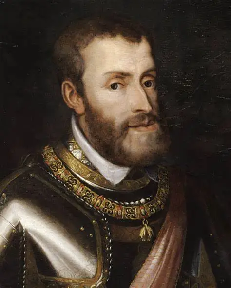

Carlo V fu imperatore del Sacro Romano Impero durante la Riforma protestante. Tentò di mantenere l'unità religiosa dell'Europa e difendere il cattolicesimo contro la diffusione del luteranesimo.
Si oppose alle idee di Lutero, convocò la Dieta di Worms e dichiarò l'eresia del luteranesimo. Tuttavia non riuscì a fermarne la diffusione, anche a causa dei principi tedeschi che lo appoggiarono.
Il suo regno preparò il terreno alla Controriforma: promosse il Concilio di Trento, che ridefinì la dottrina cattolica e rispose alla Riforma protestante.